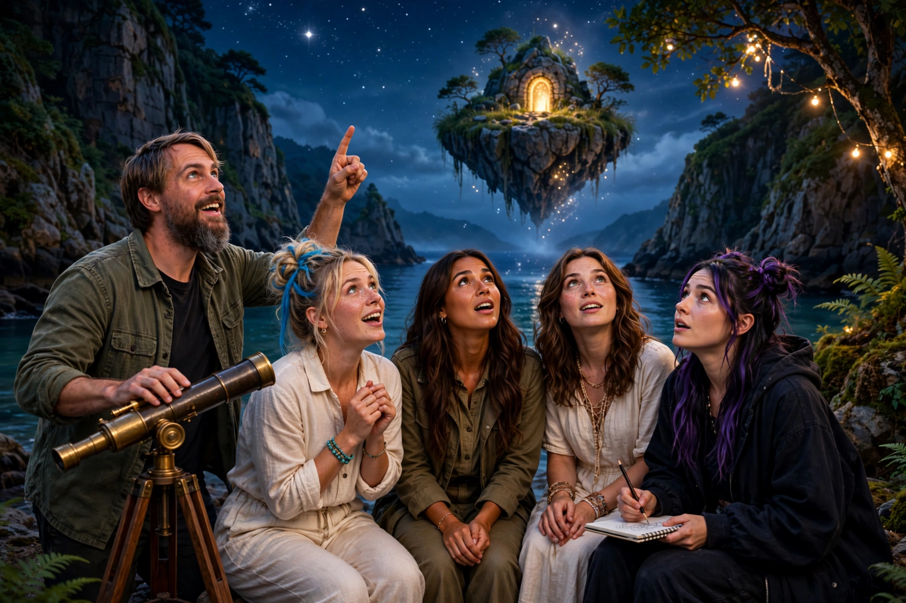
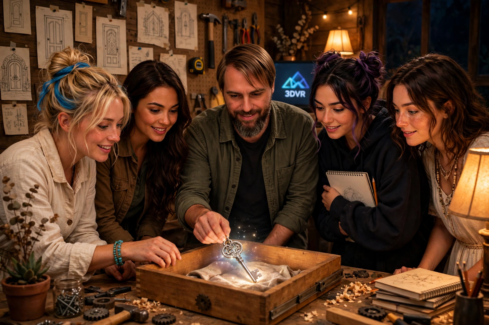
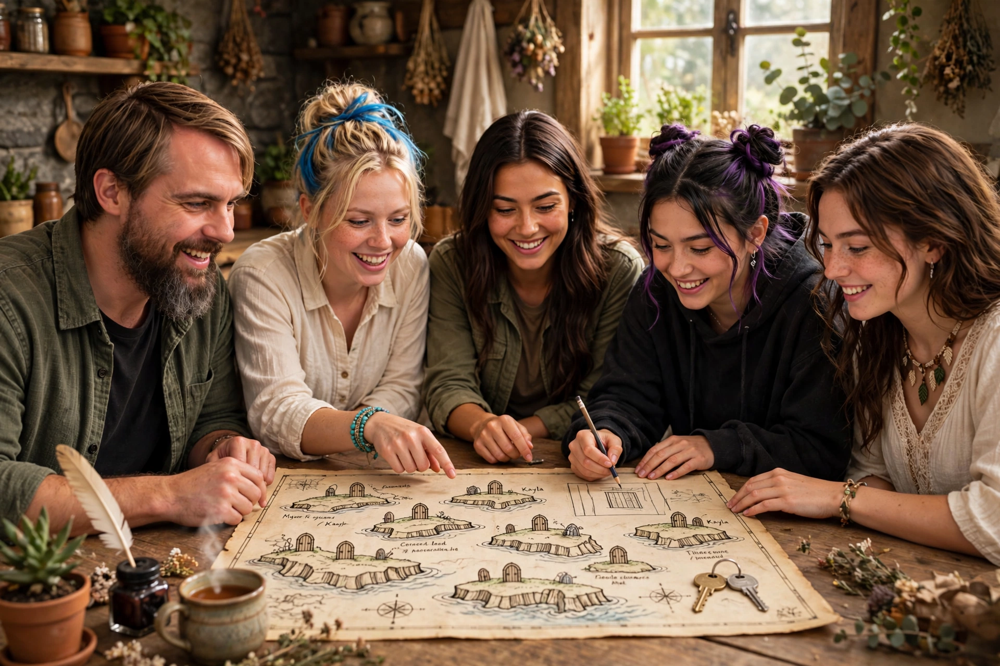

The Second Key
Book Two of the 3DVR girls adventures
The girls found the first door on their own. The second key was waiting somewhere they had never thought to look: in the keeper's drawer.
Book Two · a 3DVR girls adventure · Back to the girls

Book Two of the 3DVR girls adventures
The girls found the first door on their own. The second key was waiting somewhere they had never thought to look: in the keeper's drawer.
That evening the girls came back over the cliffs with salt on their boots and a story too big for one sketchbook page. The garden muse held out the brass key to Thomas, the keeper of the gate, the one who built the garden walls and keeps the portal humming. Thomas went quiet. Not because he did not believe them. Because he recognized the key. “You found the cove door,” he said at last. “Then you need to see what the telescope is really for.”

Down in the hidden cove, Thomas swung the old telescope past the harbor, past the cliffs, and up into the first stars, and the girls took turns looking: an island hanging in the sky where no island should be, with a tiny door standing on it, open to nothing. “Every keeper watches that island,” he said. “None of us ever found the way up.” Kayla grinned the grin that starts expeditions. “Then we find it together.”

Back in the workshop, under the sketches of doors Thomas had drawn from dreams and never shown anyone, he opened the drawer he never opens. Inside lay a silver key, cool as moonlight, cut for a lock shaped like a star. “The brass key opens doors in the world,” he said. “This one... I think this one opens the way between them.” The garden muse picked it up, and it warmed in her hand like the first key had. Muse drew it twice, in case it vanished by morning.

By morning there was a map on the table, older than the cottage, showing seven doors: one in a cliff, one in the sky, and five in places with names like the Undertow Library and the Orchard at the End of the Road. Two keys. Seven doors. The blonde set the keys side by side like the start of a sentence, one in front of each of them. “Well,” said Thomas, pouring the tea, “you had better get building.”
The end of Book Two. The island is still up there, and the silver key hangs with the brass one now, both of them in the girls' keeping. Book Three: The Island in the Sky.